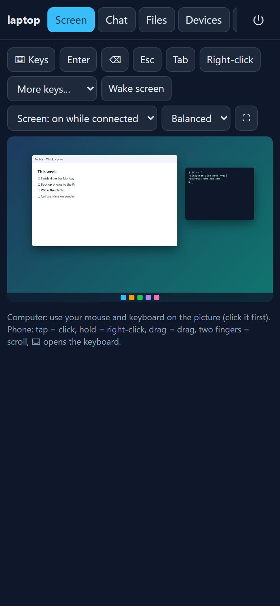
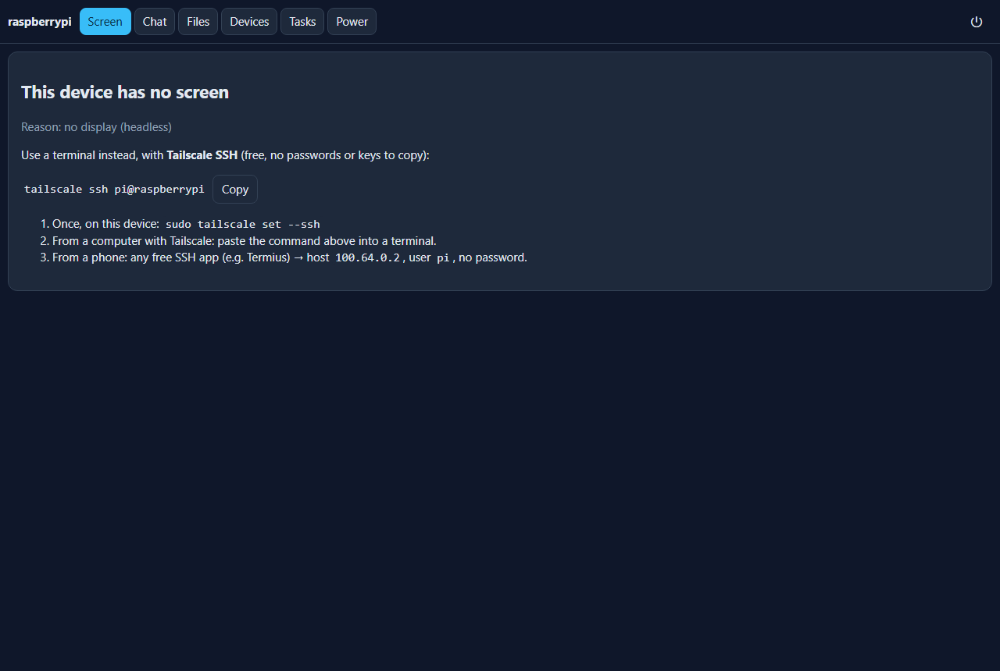
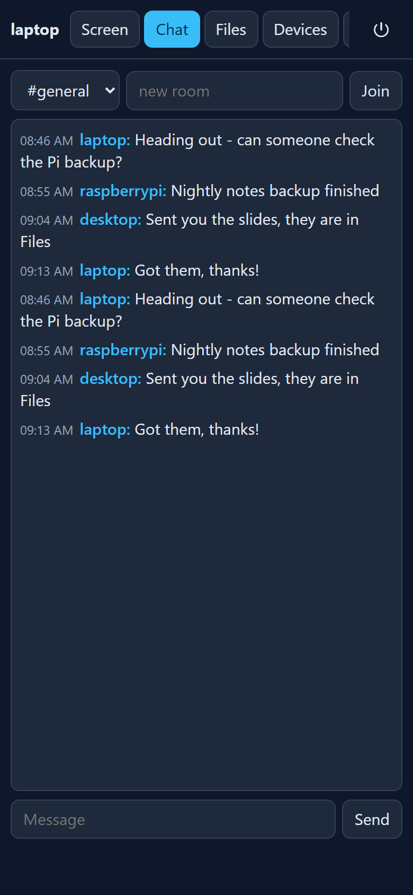
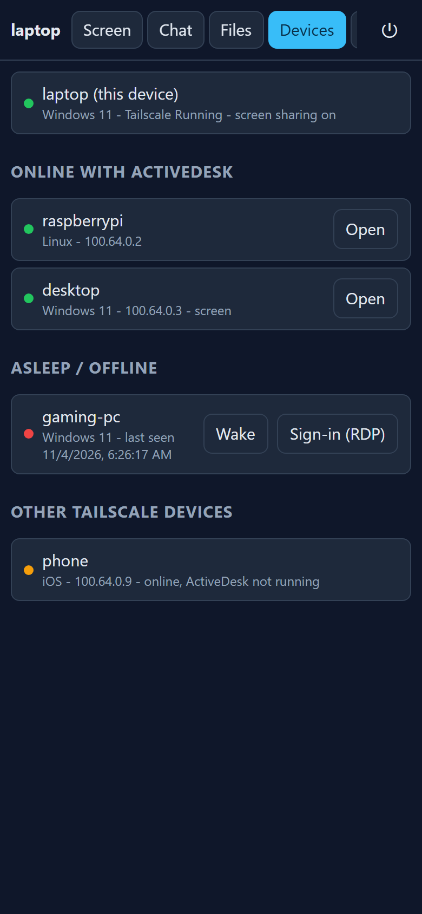
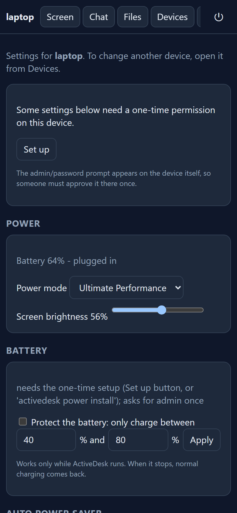

How to use it
Open http://<device>:47801 from your phone’s browser over Tailscale, enter the PIN, and use the tabs below.
Screen — remote view and control

Tap = click, hold = right-click, drag = drag, two fingers = scroll. Tap ⌨ to open the on-screen keyboard. The toolbar lets you tap Enter, Esc, Wake screen, choose Keep screen on (off / session / always), and picture quality.
Keep screen on: session (default) keeps the display on while someone is connected; always keeps it on until you change it; off lets the device sleep normally.
While the screen is kept on, ActiveDesk also taps Shift and moves the pointer 1 pixel every 30 seconds. It never clicks. This stops apps that ignore the system setting from marking you “away”.
Windows lock screen: no app can type at it by design. Use Sign-in screen (RDP) from the Devices tab, which downloads an .rdp file pointing at the Tailscale IP. Needs Windows Pro with Remote Desktop on, and Microsoft’s “Windows App” on phone.
Headless device? Use Tailscale SSH

If a device has no screen (a headless Pi, a server), the Screen tab offers a copyable tailscale ssh user@host command. From a phone, use any free SSH app (e.g. Termius) with the host and user shown—no password or keys to copy.
Windows can’t be a Tailscale SSH server. Turn on the built-in OpenSSH Server (Settings → System → Optional features) and use the same command with ssh.
Chat & Files

Send messages between devices, create rooms, and transfer files with SHA-256 verification. Files sent to a device appear in its Files tab and can be downloaded or forwarded to another device.
Devices

Shows this device, other ActiveDesk devices online, asleep devices you can wake, and other Tailscale devices without ActiveDesk. Use Wake to send a wake-on-LAN packet (relayed through any awake device on the same LAN—an always-on Pi works well for this).
Power & Battery

The Battery section appears only when the device has a battery. Set a charge range (e.g. 40–80%) so the laptop only charges between those levels—and only while ActiveDesk runs. When it stops, normal charging returns.
The one-time setup needs admin once (UAC on Windows, sudo on Linux). The Auto power saver switches to a power-saving mode and dims when on battery and below a percentage you choose, then restores your settings when you plug in.
iPhone → Raspberry Pi + Windows laptop
Install ActiveDesk on the Pi (X11 session, not Wayland) and on the Windows laptop, both signed into the same Tailscale account. From your phone:
- Open
http://<pi-or-laptop>:47801and enter that device’s PIN. - Use the Screen tab to view and control either machine.
- Use the Devices tab to see both machines and wake either one if it’s asleep.
Both devices must be running ActiveDesk and Tailscale at the same time to reach each other.
Scheduler
Define tasks in ~/.activedesk/tasks.json (edits reload automatically). Schedule types: manual, startup, every 30s / 15m / 2h / 1d, daily HH:MM. Actions: shell, http, backup (zip), email (SMTP over TLS), chat. Tasks can depend on other tasks (a DAG), with retries, backoff and timeouts.